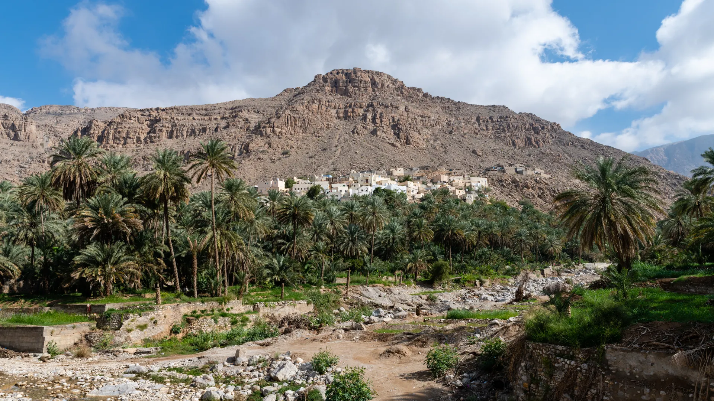
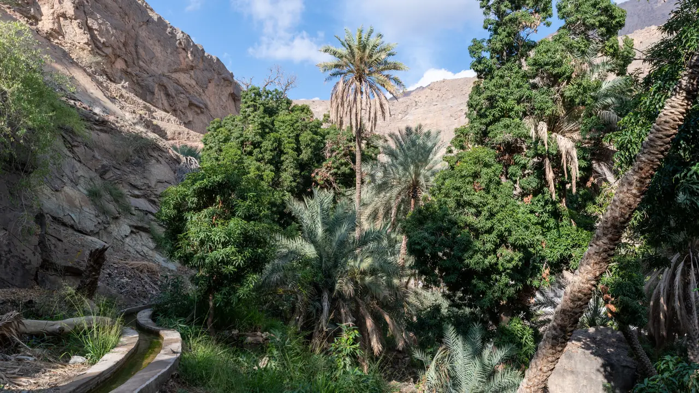
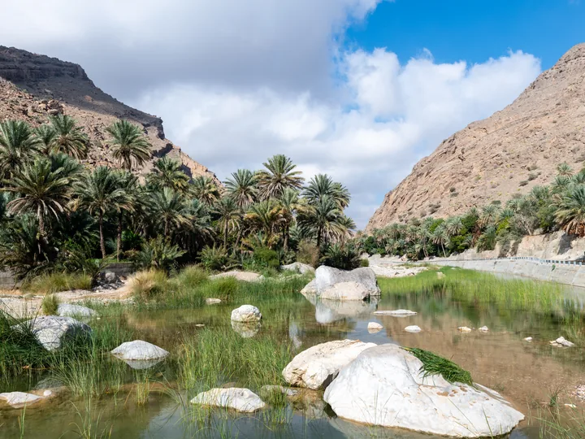
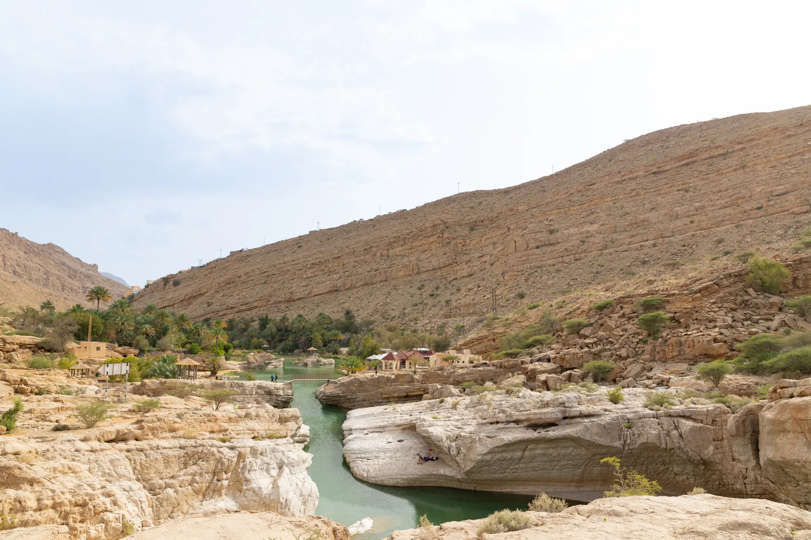

١٨٤٤ م
✧
البدايات في حلفا
وُلد في قرية حلفا، بوادي بني خالد، وتلقى علومه الأولى في محيطه العُماني.

المعروف بـ«المطوّع» ١٨٤٤ – ١٩٠٨ م
قاضٍ وفقيه وشاعر عُماني، بدأت سيرته في قرية حلفا بوادي بني خالد وامتد أثره إلى شرق أفريقيا.
من قرية حلفا بولاية وادي بني خالد، برز اسم الشيخ عامر بن سليمان بن خلفان الشعيبي، الذي جمع بين دراسة العلوم الشرعية، والقضاء، والإبداع في الشعر الشعبي العُماني.
عرف بلقب «المطوّع»، وتلقى من معارف عصره في الفقه واللغة، ثم رحل إلى شرق أفريقيا في زمن الروابط التاريخية الوثيقة بين عُمان وزنجبار. وشهدت تجربته تداخلًا لافتًا بين العلم والتعبير الشعري والفنون الشفهية.
اقرأ محطات حياته ↙
نشأ الشيخ في قرية حلفا بولاية وادي بني خالد. وفي هذه الصورة المعاصرة من الولاية، يمر ماء الفلج بمحاذاة الصخر في طريقه إلى بساتين النخيل.
◈ محافظة شمال الشرقية · سلطنة عُمانصور معاصرة من الولاية، تمتد من قنوات الأفلاج وبساتين النخيل إلى الممرات الصخرية.



مسيرة عُمانية امتدت بالعلم والكلمة إلى الساحل الأفريقي.
وُلد في قرية حلفا، بوادي بني خالد، وتلقى علومه الأولى في محيطه العُماني.
تلقى العلم على يد الشيخ عبد الله بن سعيد بن عيسى السَمَي، واشتغل بالعلوم الشرعية واللغة العربية.
تولى القضاء في كشكاش من أعمال ويتة خلال عهد السلطان حمد بن ثويني، واتصل بأوساط علمية وقضائية.
توفي في شرق أفريقيا، وبقيت قصائده وأجوبته الفقهية حاضرة في الذاكرة والدراسات اللاحقة.
صدر «ديوان الشيخ عامر بن سليمان الشعيبي» عن وزارة التراث والثقافة بمسقط، بتحقيق وتصحيح محمد بن حمد المسروري.
ممارسة القضاء الشرعي في شرق أفريقيا خلال عهد سلطنة زنجبار، وما ارتبط بها من أحكام ووثائق.
المراجع التاريخيةأجوبة ومسائل فقهية وردت ضمن مواد مخطوطة منشورة، وتُبرز جانبًا من عمله العلمي.
اطّلع على مادة فقهيةقصائد شعبية ارتبطت بفنون مثل الرزحة والعازي والنشدان، وشهدت تنوعًا في الإيقاع والبناء.
من روائع الديوانعُرف الشيخ عامر في الشعر الشعبي العُماني، وارتبط اسمه بأنماط من الإنشاد والفنون الأدائية. تظهر هنا مقتطفات قصيرة منشورة من أشعاره، مع روابط إلى الديوان ومجموعة التسجيلات الصوتية.
استمع إلى ديوانهسمّو وأنا مثلكم سمّيتْ
بتنزل بركة الرحماني
وعلى النبي محمد صلّيتْ
صلاة تكعم العدواني
من أبياته المنشورة في أثير

البرك الصخرية
تصوير dronepicr · حقوق الصورةنافذة إلى السيرة والنسب والديوان والوثائق المنشورة.
سلسلة نسب الشيخ عامر بن سليمان كما ترويها الأسرة في التعريف المنشور بقناة الديوان.
نصوص علمية وردت ضمن «زيادات أبي سعيد الكدمي» وتشير إلى أجوبة الشيخ ومسائله.
المادة المنشورةمجموعة تسجيلات ومقاطع عن شعر الشيخ وسيرته على قناة الديوان المخصصة له.
استكشف القناةهذا الأرشيف مساحة لحفظ رواية الأسرة إلى جانب الدراسات والكتب والوثائق المنشورة، مع إظهار بيانات كل مرجع في موضعه.
نوافذ أصلية للكتب والدراسات والمقالات المرتبطة بالشيخ. أُدرجت الروابط لمساعدة القارئ والباحث على الرجوع إلى المادة المنشورة.